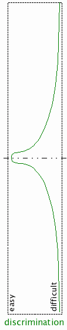

Unit 6: Perception II, constancies, learning, and generalization

perceptual constancies, categories, and generalization

- The problem of dimensionality
- The problem of indeterminacy
- A common solution:
assume the world to be well-behaved,
that is, characterized by statistical regularities
-
[EXTRA: the technique known as regularization is a mathematical expression of this
trust]
constancy and the nature of perception
All perceptual problems share the same computational structure,
illustrated on the right.
What is "intrinsic" and what is "extrinsic" depends on the task.
the problem of dimensionality
|
|
| a multidimensional chicken |
a multidimensional illumination space |
the problem of dimensionality
|
|
| a multidimensional chicken |
a multidimensional illumination space |
Solution:
assume that the world is statistically well-behaved
—
- a few dimensions suffice to distinguish between chickens and
ducks, or between horses and donkeys;
- a few dimensions suffice to characterize illumination.
the problem of indeterminacy
the problem of indeterminacy
Solution:
assume that the world is statistically well-behaved
—
- illumination usually varies gradually over the scene;
- surface lightness (reflectance) is piecewise constant over the
scene, with occasional abrupt changes.
understanding lightness constancy
To separate lightness from illumination, assume that:
- illumination changes slowly over the image;
- lightness (reflectance) changes in jumps.
This suggests the following algorithm for recovering lightness:
- scan the image seeking abrupt jumps in intensity;
- attribute every such jump to a change in lightness (as opposed to
illumination);
- at the end of this process, calibrate the extreme values ("black" and
"white").
For details, see Analysis of the Retinex theory of color vision by
D. H. Brainard and B. A. Wandell (JOSA, 1986).
an example of a failure of lightness constancy

an example of a failure of lightness constancy
The constancy computation fails when assumptions behind it are
violated.

an example of a failure of "structure from motion" constancy
an example of a failure of shape constancy
Wire sculpture by Markus Raetz.
perceptual learning, categories, and generalization
- The emergence of perceptual categories
[see sec. 5.4.1 in the
textbook]
- Perceptual adaptation [see sec. 5.4.2]
- Shepard's Universal Law of Generalization
perceptual learning from examples
Top: acquiring the examples and forming a decision boundary in the
representation space.
Bottom: categorical perception through a warping of the
representation space.
categorical perception


A morph sequence of face images, and a telltale sign of categorical perception:
- sigmoidal response probability in a
classification (for a single image, "which category is this?")
task.
As the image is chosen from a morph sequence between category A (e.g., "male") and
category B ("female"), the probability of subjects choosing B first
stays close to 0, then rapidly swings closer to 1, then slowly
approaches 1. The rapid change occurs around the category boundary.
categorical perception

A morph sequence of face images, and a telltale sign of categorical perception:
- peaked performance (% correct) in a pairwise
discrimination (for a pair of images, "are these same or different?") task.
The best performance (highest % correct) is obtained for pairs of stimuli that
straddle the category boundary.
categorical perception

A morph sequence of face images, and two telltale signs of categorical perception:
- sigmoidal response probability in a
classification ("which category is this?")
task.
- peaked performance (% correct) in a pairwise
discrimination ("are these same or different?") task.
The inflection point of the sigmoid and the peak are both centered on the
category boundary.
categorical perception: the powerful pull of perceptual categories
 Pareidolia
Pareidolia: seeing meaningful forms (such as faces) in
random stimuli.
categories and generalization
Categories would be of little use if it were not possible to extend
classification to new stimuli.
[Think Sweetango!]
the basis of generalization in similarity

Categories would be of little use if it were not possible to extend
classification to new stimuli.
"In reality, all
arguments from experience are founded on the
similarity which we discover among natural objects, and by
which we are induced to expect effects similar to those which we
have found to follow from such objects. [...]
From causes which
appear similar we expect similar effects."
David Hume
An Enquiry Concerning Human Understanding (1748)
categories and generalization
The key concept (introduced
by Roger Shepard):
consequential
region: the set of points in the representation
space, which stand for stimuli whose consequences are the
same as those of the original stimulus.
According to Shepard, a useful a priori assumption that
could be made is that consequential regions are
contiguous (additional assumptions can be made,
depending on the context).
for generalization, (dis)similarity = distance in a representation space
Roger
Shepard's universal law of generalization:
- [goal: explaining subjects' behavior towards a set of stimuli]
- a set of relatable stimuli can be arranged in a representation space
[which Shepard calls "psychological space"]...
- ... in such a manner that the likelihood that the subject
will generalize the category label ["tasty"] from one stimulus [this
apple] to another [that apple] diminishes
exponentially with their distance in that space.
Shepard's Law of Generalization
Shepard's Law of Generalization: empirical support
- Gather subject responses reflecting perceived similarity among a set
of stimuli.
- Use MDS to embed the stimuli in a low-dimensional "psychological
space".
Shepard's Law of Generalization: empirical support

- Gather subject responses reflecting perceived similarity among a set
of stimuli.
- Use MDS to embed the stimuli in a low-dimensional "psychological
space".
- In this representation space, the probability of
generalization from one stimulus to another falls exponentially with their
distance.
This dependence of generalization on (dis)similarity is
invariant across
domains, tasks, and subjects.
pause and consider: two universal laws
|
|
|
Every massive particle in the universe attracts every other massive
particle with a force which is directly proportional to the product of
their masses and inversely proportional to the square of the distance
between them.
|
Every set of relatable stimuli can be arranged in a psychological
space so that the likelihood of response generalization among them diminishes
exponentially with their distance.
|